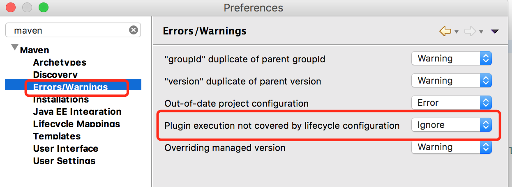

框架开环境搭建
此章节将说明 运行 HAP 框架所需的基本步骤。仅用于框架的开发、测试。
后端开发环境搭建
开发工具
- JDK 1.8 及以上
- IntelliJ IDEA 或 Eclipse
- redis 3.0 及以上
- maven 3.3 及以上
- Tomcat 7+ (不支持 Tomcat 6)
- 数据库（任选）
- Mysql server 5.6 及以上
- SqlServer 2012 及以上
- Oracle 9 以上
- Navicat Premium（或其他）
- Git
注：开发人员所需工具请向管理员获取
软件安装
Java 安装
- 在 Oracle 官网 下载对应平台的 JDK 1.8 以上的环境。
- 本地执行安装文件，安装 JDK 环境。
- Win 在环境变量系统变量中 path 配置 JDK 的环境变量指向 JDK 安装目录下
JDK/bin。 - 配置完成后打开 cmd 执行
javac，有提示则说明环境安装成功。
eclipse 中 JRE 的配置需要指定 JDK 目录，不能是 JRE。(maven 需要 JDK)
Git 安装
- 在 Git 官网 下载对应平台的 Git。
- 本地执行安装文件， 安装 Git 环境。
- Win 在环境变量中系统变量的 path 配置 Git 的环境变量指向 Git 安装目录下的
/bin。 - 配置完成后打开 cmd 执行
git，有提示则说明环境安装成功。
对于 Windows，安装 Git 以后，你可以在任意目录 右键，
Git Bash Here打开的 MINGW 命令窗口可以执行 兼容 linux 系统 的命令，如
rm，ls等
Maven 安装
- 在 Maven 官网 下载对应平台的合适的 maven 版本的压缩包。
- 本地解压压缩包。
- Win 在环境变量中系统变量的 path 配置 maven 的环境变量指向 maven 解压目录下的
/bin。 - 配置完成后打开 cmd 执行
mvn -v，有提示则说明环境安装成功。
Redis 安装
- 在 Redis win 官网 下载最新的 redis 版本的压缩包。
- 本地解压压缩包。
- Win 在解压目录下打开 cmd 执行
redis-server.exe redis.windows.conf，有提示则说明 Redis 已经启动。 - Win 平台下如果启动失败，修改 redis.windows.conf 文件中的 maxheap 为
maxheap 1024000000。
注： 开发需要依赖 Redis 环境，所以在启动后台程序时，请确保 Redis 已经启动。
- redis GUI 客户端下载 ：http://redisdesktop.com/
- redis 命令手册：http://doc.redisfans.com/
- redis 清空缓存命令：flushall
Mac, Linux 用户, 请到 http://redis.io 下载源码，编译安装
开发准备
常见问题
Window 环境下，Git Bash 乱码？
- 右键标题栏 → Options → Text：
- Local : zh_CN
- Character Set: GBK
Eclipse 中 pom.xml 报错?
- 设置 eclipse → maven
